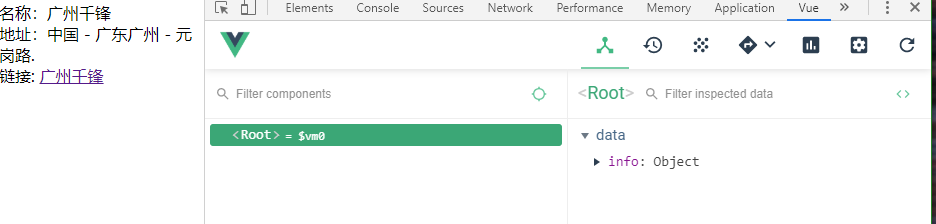

Vue学习记录
这边博客为自己学习vue的记录.开始篇幅较大,如果基础好的同学可以直接点击vue内容开始浏览.
使用 Axios 实现异步通信
什么是 Axios
Axios 是一个开源的可以用在浏览器端和 NodeJS 的异步通信框架，她的主要作用就是实现 AJAX 异步通信，其功能特点如下：
- 从浏览器中创建 XMLHttpRequests
- 从 node.js 创建 http 请求
- 支持 Promise API
相当于guawa 链式编程 chain programing - 拦截请求和响应
- 转换请求数据和响应数据
- 取消请求
- 自动转换 JSON 数据
- 客户端支持防御 XSRF（跨站请求伪造）
GitHub：https://github.com/axios/axios
为什么要使用 Axios
由于 Vue.js 是一个 视图层框架 并且作者（尤雨溪）严格准守 SoC （关注度分离原则），所以 Vue.js
并不包含 AJAX 的通信功能，为了解决通信问题，作者单独开发了一个名为 vue-resource 的插件，
不过在进入 2.0 版本以后停止了对该插件的维护并推荐了 Axios 框架
第一个 Axios 应用程序
咱们开发的接口大部分都是采用 JSON 格式，可以先在项目里模拟一段 JSON 数据，数据内容如下：
1 | <div id="app"> |
结果输出

Vue布局
表单输出
什么是双向数据绑定
Vue.js 是一个 MVVM 框架，即数据双向绑定，即当数据发生变化的时候，视图也就发生变化，当视图发生变化的时候，数据也会跟着同步变化。这也算是 Vue.js 的精髓之处了。值得注意的是，我们所说的数据双向绑定，一定是对于 UI 控件来说的，非 UI 控件不会涉及到数据双向绑定。单向数据绑定是使用状态管理工具的前提。如果我们使用 vuex，那么数据流也是单项的，这时就会和双向数据绑定有冲突。
为什么要实现数据的双向绑定
在 Vue.js 中，如果使用 vuex，实际上数据还是单向的，之所以说是数据双向绑定，这是用的 UI 控件来说，对于我们处理表单，Vue.js 的双向数据绑定用起来就特别舒服了。即两者并不互斥，在全局性数据流使用单项，方便跟踪；局部性数据流使用双向，简单易操作。
在表单中使用双向数据绑定
你可以用 v-model 指令在表单 、
注意：v-model 会忽略所有表单元素的 value、checked、selected 特性的初始值而总是将 Vue 实例的数据作为数据来源。你应该通过 JavaScript 在组件的 data 选项中声明初始值。
1 | <div id="vue"> |
输出